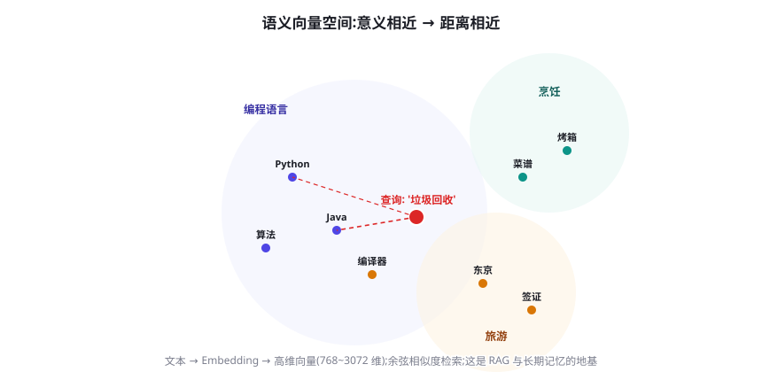
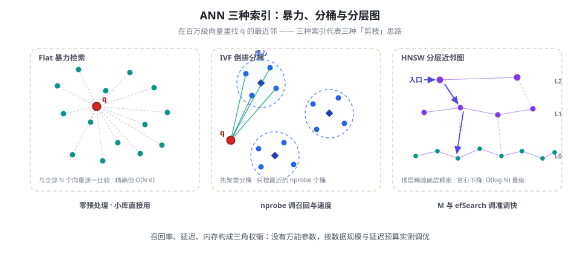

Embedding 与向量空间基础
RAG、长期记忆、聚类去重都建立在一件事上：把文本变成「语义相近就距离相近」的向量。本章从词向量讲到现代句向量，讲清余弦相似度与 ANN 索引（IVF/HNSW）的原理与调参，最后给出基于 MTEB 与自建评测的嵌入选型方法。
把语义装进几何
嵌入（Embedding）的出发点是一个语言学观察——分布假说（Distributional Hypothesis）：词义由它的上下文决定，"You shall know a word by the company it keeps"（Firth, 1957）。把这句话变成优化目标，就得到第一代经典成果 Word2Vec（Mikolov et al., 2013）：在海量文本上训练一个浅层网络预测「词的邻居」，训完把网络内部的权重当作词向量。惊人的副产品是向量算术：king − man + woman ≈ queen——语义关系被表示成了空间方向。
但静态词向量有一个天花板：一词多义。「苹果发布新机」和「苹果很甜」里的「苹果」共享同一个向量。解决之道是上下文化：第 4 章介绍过的 Encoder-only Transformer（ELMo、BERT）让每个词的表示随上下文动态生成。可 BERT 的原生输出并不直接适合检索——直接拿 [CLS] 向量或平均池化做相似度，效果反而不如训练过的词向量，因为 BERT 是为「填空」训练的，没人教它「两句什么算相关」。
补上这一课的是 Sentence-BERT（Reimers & Gurevych, 2019）：用自然语言推理数据对孪生 Transformer 做对比微调，让「语义相近的句子靠近、无关的远离」。加上随后 DPR（Karpukhin et al., 2020）在开放问答检索上的成功，现代嵌入模型的标准形态就此定型——双塔编码器（Bi-Encoder）：查询与文档各自独立编码成向量，检索时只算向量距离。与之相对的 Cross-Encoder 把查询与文档拼在一起过模型，让两者在注意力层里充分交互，精度更高，但每对都要现算、无法预计算——注定属于第二道「重排」工序（第 20 章）。两者的分工是检索系统的经济学：Bi-Encoder 把「百万文档 × 毫秒响应」变成可能，Cross-Encoder 只对候选的头部精算。
最后回答一个入门常见问题：向量是「算出来」的，不是存出来的。把文本送进编码器做一次前向传播，逐层 Transformer 提炼语义，最后一层对全部 Token 的表示做池化（平均池化或取 [CLS] 位），压成一个固定维度的向量——维度（384、768、1024、3072 都常见）就是这层隐藏表示的宽度。同一个模型里，这个映射是确定的：同一文本永远得到同一向量，不同文本的向量距离反映模型学到的语义距离。
同时要给嵌入划清能力圈，它不是万能的语义理解。适合的：短句到几段文本的语义匹配、主题聚类、改写识别——这正是 RAG 分块后的典型粒度。勉强的：超长文档（语义稀释，必须先分块）、需要精确匹配的字符串（错误码、型号、订单号——词面即语义，BM25 反而更准）、以及任何要求「逐字可溯」的任务（向量只给相似度，给不了证据链）。把这些记在选型之前，能省掉一半「检索效果差」的误判——问题常常不在模型，而在任务根本不该只靠向量。

| 代际 | 代表 | 表示方式 | 能捕捉 | 主要短板 |
|---|---|---|---|---|
| 静态词向量 | Word2Vec / GloVe | 一词一向量，查表 | 词级语义关系、类比 | 一词多义、无句级表示 |
| 上下文词向量 | ELMo / BERT | 随上下文动态计算 | 多义词、句法与语义 | 原生输出不直接适配相似度检索 |
| 句向量（现代嵌入） | SBERT / BGE / E5 / text-embedding-3 | 整段文本一向量（Bi-Encoder） | 句/段级语义、检索相关性 | 受训练目标与语料域限制 |
度量语义：余弦相似度
有了向量，还要选一把尺子。最常用的是余弦相似度：两向量夹角的余弦，只关心方向不关心长度——对文本嵌入来说，「说得像不像」比「向量多长」更接近语义。公式是 cos(a,b) = a·b / (‖a‖‖b‖)，取值范围约 −1 到 1。两个实用推论：把所有向量归一化成单位长度后，点积就是余弦，工程上先归一化再用点积，省一次除法还能提速；归一化之后，欧氏距离与余弦单调等价（‖a−b‖² = 2 − 2·cos(a,b)），选哪个都一样。
import numpy as np
def cos(a, b):
a, b = np.asarray(a, dtype=float), np.asarray(b, dtype=float)
return float(a @ b / (np.linalg.norm(a) * np.linalg.norm(b)))
u = embed("如何用 Python 读取 Excel 文件")
v = embed("pandas 导入 xlsx 表格的方法") # 语义相近的另一种说法
w = embed("烤箱烤面包的温度设定") # 语义无关
print(round(cos(u, v), 3)) # 约 0.8 量级：同一说法族内高分
print(round(cos(u, w), 3)) # 约 0.1 量级：跨主题低分
# 注意：具体数值因模型而异，只有「相对大小」有意义生产代码里几乎不会手写这个函数，而是把归一化交给批处理：一次算出 N 条文档的向量矩阵，行归一化后，查询向量与矩阵做一次点积就得到全部相似度——矩阵乘法在 CPU/GPU 上都是高度优化的，十万文档毫秒级完成。归一化必须查询与文档两侧一致地做：只归一化一侧会让点积与余弦悄悄分家，检索结果飘忽难查。
用这把尺子时要避开三个坑。相似不等于相关：「如何退货」与「如何开发票」句式高度相似但意图无关，纯向量检索会混——这正是后面混合检索（加词法匹配）要救的场景。分数只在同一模型内可比：A 模型的 0.82 与 B 模型的 0.82 没有任何可比性，甚至同一模型在不同语料上的绝对阈值也不能迁移，阈值必须在自己的数据上实测。度量方式要跟训练对齐：模型用什么度量训练就应用什么度量检索（多数用余弦，个别模型按点积训练），用错尺子会白白损失召回。
还有一个容易被忽略的不对称性：检索里查询通常很短（一句话），文档很长（一段甚至一页）。把两者映射进同一个空间本身就是一种压缩妥协，为此不少模型训练时区分查询与文档两侧（配合不同的指令前缀），语义上等于告诉模型「这是找一个长答案的短问题」。使用带指令前缀的模型时（下一节），查询侧与文档侧要用各自的前缀，混用会实打实掉召回。
对 BERT 一类模型的原始向量做统计会发现，所有向量的余弦相似度挤在一个狭窄的高区间里（各向异性，Anisotropy，Ethayarajh, 2019）——什么句子都「很像」。对比学习微调相当于把这块被压扁的分布重新拉开，让语义差异映射进角度差。这也解释了为什么绝对分数没有意义：同一个 0.85，在不同模型、不同空间形状下对应的「相近程度」完全不同。
嵌入模型是怎么炼成的
现代嵌入模型的主流配方是对比学习（Contrastive Learning）：拿一个锚（查询）、一个正例（相关文档）、一批负例（无关文档），训练目标是「拉近锚与正例、推远锚与负例」（InfoNCE 损失）。正负例的来源决定了模型的能力边界——DPR 用问答对，SimCSE（Gao et al., 2021）证明「同一句话过两次 dropout」就能造出高质量正例，检索模型则大量使用「弱监督标题-正文对 + 难负例挖掘」。
其中难负例（Hard Negatives）值得单独强调，因为它是精度的主要来源。随机负例太容易区分，模型学不到边界；难负例是「词面高度相似但语义无关」的文档（查「苹果 股价」，负例选「苹果 种植技术」），迫使模型学会细粒度区分。工程上用现成的 BM25 或第一代向量检索从全库捞 Top-K 作难负例候选，正例排前面、难负例排后面。效率侧的关键是 in-batch negatives：把同批其他样本全部当作彼此的负例，一次前向就能构造锚 × (batch − 1) 的负例矩阵——批量越大、负例越多、效果越好，这也是训练嵌入模型吃显存的原因。蒸馏是另一条常见增强：让 Cross-Encoder 给海量「查询-文档」对打相关性分，再让 Bi-Encoder 去拟合这些分数，把精排模型的知识「灌」进可预计算的向量里。
如果你考虑自己微调，门槛比想象中友好：在开源底座上做领域适配，通常几万对「查询-相关文档」标注（难负例可自动挖）就能带来可观提升，单卡数小时量级即可完成训练。但顺序不能反——先用通用模型建好评测基线，确认失配在哪类查询上，再针对性补数据；没有基线的微调既说不清提升了多少，也守不住通用能力不倒退的底线。
两个与使用直接相关的训练细节。其一，指令前缀：E5、BGE 一类模型训练时给查询和文档加了任务前缀（如「为这个句子生成表示以用于检索相关文章：」），推理时漏加前缀会损失召回——用模型前先读它的 Model Card。其二，中文与多语言：C-Pack（Xiao et al., 2023）发布了一批中文嵌入模型（BGE 系列）与中文评测（C-MTEB），中文场景不必默认英文模型；需要跨语言检索（中文查询召回英文文档）时，选 bge-m3、multilingual-e5 这类多语言模型——它们的训练数据里显式包含跨语言配对，而不是指望单语模型「碰巧」对齐。规格上再盯三个数：维度（影响索引体积与速度）；上下文长度（早期 512 Token 上限，超过要分块——分块策略见 第 20 章）；是否支持降维。降维值得一提：Matryoshka Representation Learning（Kusupati et al., 2022）让向量前缀本身就是一个可用的小向量，OpenAI 的 text-embedding-3 系列（2024-01）据此提供 dimensions 参数，可在近乎不损失质量的前提下把 3072 维截到 512/256 维，索引体积与内存随之降一个量级。
ANN 索引：亿级向量的毫秒检索
向量有了、尺子有了，还剩规模问题。库里有 N 条向量时，逐个算相似度的暴力检索是 O(N·d)：N 为百万、d 为 1024 维时，单次查询就是十亿次乘加，哪怕 Numpy 写满优化也要几百毫秒起步，还随数据线性变慢。近似最近邻（Approximate Nearest Neighbor, ANN）索引的思路是：放弃「绝对最优」，换「大概率最优 + 毫秒级返回」。三大主流索引对应三种剪枝思路：

Flat（精确检索）：不分桶不建图，适合十万级以下的库——规模小到暴力就够快时，别为索引复杂度买单。IVF（倒排文件索引）：先用 k-means 把全库聚成 nlist 个桶，查询只搜离查询向量最近的 nprobe 个桶；nprobe 从 1 调到 nlist，就在「快」与「准」之间滑动，是最好理解的召回-延迟旋钮。配合乘积量化（PQ）把向量压成几个字节的编码，内存可以降一个数量级，代价是额外一点召回损失（Jégou et al., 2011）。HNSW（分层可导航小世界图）（Malkov & Yashunin, 2018）：为全库建一张近邻图，再抽出越往上节点越稀疏的多层结构；查询从顶层入口贪心下降，高层长边快速接近目标区域、底层短边精确定位，单机即可做到亿级向量毫秒返回。两个关键参数：M（建图时每个节点的连接数，影响图的质量与内存）与 efSearch（查询时的候选队列长度，越大越准越慢）。
import faiss, numpy as np
d = 768
xb = np.random.rand(1_000_000, d).astype("float32") # 假装是百万级文档向量
faiss.normalize_L2(xb) # 归一化：点积 = 余弦
index = faiss.IndexHNSWFlat(d, 32) # 32 = M：每个节点的近邻连接数
index.hnsw.efConstruction = 200 # 建图时的候选队列，影响图质量
index.add(xb)
xq = xb[:1].copy() # 查询向量（同样要归一化）
index.hnsw.efSearch = 64 # 查询候选队列：越大越准越慢
scores, ids = index.search(xq, k=5) # 百万级库毫秒级返回 Top-5
print(ids)quantizer = faiss.IndexFlatIP(d) # 度量用内积（向量已归一化）
ivf = faiss.IndexIVFFlat(quantizer, d, 1024) # 1024 = nlist 聚类桶数
ivf.train(xb[:100_000]) # 先用样本训练聚类中心
ivf.add(xb)
ivf.nprobe = 16 # 每次只搜 16 个桶
scores, ids = ivf.search(xq, k=5) # 调大 nprobe 换召回，调小换速度两个工程细节常被低估。其一，元数据过滤与向量检索的结合方式：真实系统几乎都要「在某个租户/分类内检索」，先过滤后向量搜索（pre-filter）可能让索引剪枝失效，先向量后过滤（post-filter）又可能把结果全滤光——成熟的向量库为此实现了过滤感知的遍历策略，选型时把「带过滤的召回表现」纳入实测。其二，索引不是建完就完：IVF 的聚类中心要随数据分布漂移重训，HNSW 持续增量插入后图质量会退化，大批删除会在图上留「洞」——把「重建索引」纳入例行运维，而不是一次性动作。内存账也要提前算：FP16 下一条 768 维向量约 1.5KB，百万条约 1.5GB（量级），HNSW 的图边开销再乘以 1.5~2 倍；十亿级库要么上 PQ 压缩、要么上分布式，内存预算先于索引选型。
IVF 的桶边界来自 k-means 聚类中心，而中心是从你的数据里「学」出来的——所以 train() 是一次性必须步骤（通常抽几万到几十万条做训练即可）。这也带来两个推论：数据分布大幅漂移（换语料、换语言）后要重训聚类；nlist 与 nprobe 要联动调——经验起点是 nprobe 取 nlist 的 1%~10%，然后按目标召回二分搜参，而不是拍脑袋定死。
| 索引 | 原理 | 查询复杂度 | 内存 | 调参旋钮 | 适用规模 |
|---|---|---|---|---|---|
| Flat | 全库逐个比较 | O(N·d) | 原始向量 | 无 | 十万级以下 |
| IVF (+PQ) | 聚类分桶，只搜近桶 | O((nprobe/nlist)·N·d) 量级 | 可压缩数倍~数十倍 | nlist / nprobe | 百万~十亿级 |
| HNSW | 分层近邻图贪心下降 | O(log N) 量级 | 较高（存图） | M / efSearch | 百万~亿级，低延迟 |
除非你在做底层优化，工程上可以直接选带 ANN 能力的向量数据库（Faiss、Milvus、Qdrant、pgvector 等），把精力留给真正的误差来源——嵌入模型与分块策略。索引选型的收益常常没有选对模型大。
MTEB 与嵌入选型
嵌入模型怎么比较？社区标准答案是 MTEB（Massive Text Embedding Benchmark，Muennighoff et al., 2022）：覆盖分类、聚类、重排、检索、语义相似度等 8 类任务、数十个数据集，其检索子榜是 RAG 选型的第一参考；中文对应 C-MTEB（随 C-Pack 发布）。读榜单时记住三条纪律：榜单会饱和——新模型在公开测试集上刷分，存在隐性过拟合；榜单会错配——你的数据是工单、是法律条文、是代码，与榜单域不同时排名参考价值有限；任务维度要看清——检索强不代表聚类强，按你的实际任务子榜看。还有两个实操级提醒：同系列不同版本（bge-small 与 bge-small-zh-v1.5 之类）表现差异可能很大，记录版本号再评测；榜单平均分掩盖了「每任务方差」，检索均值高但方差大的模型对特定语料可能意外拉胯，永远以自测为准。
问题：此前嵌入评测分散、单一，无法回答「哪个模型全面更强」。方法：把 8 类任务、数十个数据集统一进一个评测框架与排行榜。结果：首次给出嵌入模型的全任务横评，成为事实上的选型入口；后续 C-MTEB 等将其推广到中文。
落到选型决策，三条路径按序考虑：
| 路径 | 成本结构 | 数据出域 | 可定制性 | 适用阶段 |
|---|---|---|---|---|
| 调 API（text-embedding-3、Cohere、Voyage 等） | 按 Token 计费，边际成本线性 | 数据要出域 | 只能选维度/模型档位 | 快速起步、不涉敏感数据 |
| 开源自托管（BGE、GTE、E5 系列） | 一次部署，边际近零 | 数据不出域 | 可微调、可控版本 | 私有化、大批量、长期运行 |
| 自训练/微调 | 标注 + 训练 + 运维成本 | 数据不出域 | 领域适配最强 | 有标注团队、通用模型明显失配 |
用 MTEB 排行榜时有两个实操技巧。一是按列过滤：先按语言（中文/多语言）筛、再按你的任务类型（Retrieval / Reranking / Clustering）排序，最后看「参数量」列——榜一若是几十亿参数的模型，先确认你有卡能跑它，8GB 显存的机器和 8×A100 的最优解完全不同；排行榜的默认视角（全任务平均、不含规模约束）对工程选型的误导性不小。二是看趋势而非冠军：同一系列模型通常随版本稳步提升，选「次一档但生态成熟、文档齐全」的模型，往往比追新版本更省事——嵌入模型的 API 稳定性（池化方式、前缀要求、量化支持）也是隐性成本。
无论走哪条路，都用你自己的 50~100 条真实查询建一个迷你评测集：标注「每条查询应该召回哪些文档」，算 Recall@k 与 MRR，用这个数字对候选模型做最终裁决——这套做法就是 第 13 章评测思维的直接应用，比任何榜单都有发言权。
落到 RAG：嵌入只是检索的第一环
在 RAG 管线（第 20 章）里，嵌入模型负责「把语义变成距离」，但管线质量不取决于它一个环节。分块在前：块太长则向量语义被稀释（一段 2000 字讲三件事，向量落在三件事的中间），块太碎则上下文丢失——分块策略的优先级不低于模型选型。混合检索在中：向量检索对精确匹配天然偏弱（型号、人名、错误码这类「词面即语义」的查询），与 BM25 等词法检索加权融合（RRF）能补上短板。重排在后：Cross-Encoder 对「查询-文档对」逐一精算相关性，把向量召回的 Top-50 重排成 Top-5，是性价比最高的质量提升之一，两段式架构的取舍见 第 21 章。长期记忆（第 19 章）复用同一套向量地基，只是检索对象从文档库换成了历史对话与事实条目。
向量地基的用途也不止检索。去重：新文档与库内已有条目余弦超过阈值即视为近似重复，比文本哈希能抓住「改写式重复」；聚类：把语料按向量聚类可以无标注地发现主题结构，常用于数据探查与坏例挖掘；语义缓存与路由：把高频查询的答案按查询向量缓存，命中近似查询直接返回（语义缓存），或按向量把请求路由到不同的下游模型——两者都是第 89 章成本工程的常客。同一个嵌入模型服务多用途时要留意：为检索调优的阈值不能挪用到去重或聚类上，用途不同、阈值重测。
上线后怎么判断「嵌入这一环出了问题」？三个坏味道自检。检索结果全是同义改写：Top-K 高度雷同，说明多样性不足，考虑 MMR（最大边际相关）这类带多样性的重排；换种说法就查不到：同义改写测试（把 10 条真实查询各写 3 个说法，看召回是否一致）大面积失败，说明模型对域内措辞不鲁棒，优先换模型或补微调，而不是调索引参数；「问句查不到陈述句」：查询是疑问句、语料是陈述句时两者天然有语义偏移，粒度与语态要对齐——让查询侧生成「假设性答案」再拿去检索（HyDE 思路）是有效的缓解，进阶用法见 第 21 章。
两套嵌入模型的向量空间互不相通——新模型算出的查询向量无法去搜旧模型建好的索引。换模型意味着全量重新嵌入与重建索引，成本随库规模线性增长；同理，「同一张索引里混用两个模型的向量」必然检索出垃圾。上线前把模型选型当一次性重决策对待，并把「嵌入模型版本」写进索引元数据。
第一步，按约束筛（部署方式、数据敏感度、语言、维度、上下文长度），把候选缩到 3 个以内；第二步，用自建的 50~100 条标注查询跑 Recall@k/MRR，同时记录嵌入耗时与索引体积；第三步，在真实业务灰度中对比线上指标。整个过程一天可以做完，收益却贯穿 RAG 系统的整个生命周期。
本章小结
- 嵌入的根基是分布假说：从静态词向量（Word2Vec）到上下文表示（BERT）再到对比学习训练的句向量（SBERT/BGE/E5），每代解决上代的表示缺陷；现代形态是 Bi-Encoder，与 Cross-Encoder 构成「粗召回 + 精重排」的经济学分工。
- 余弦相似度只比方向不比长度；归一化后点积即余弦，且查询与文档两侧必须一致地归一化。相似≠相关；分数只在同一模型内可比，阈值必须在自有数据上实测。
- 现代嵌入模型 = Bi-Encoder + 对比学习：难负例决定精度上限，in-batch negatives 决定训练效率，指令前缀影响召回，Matryoshka 结构支持无损降维；跨语言需求选多语言模型。
- ANN 用近似换速度：Flat 适合小库，IVF 用分桶剪枝（nprobe 调召回），HNSW 用分层图贪心下降（M/efSearch 调准调快）；带过滤检索与索引重建是两个常被低估的工程细节。
- 选型以 MTEB/C-MTEB 为入口、以自建迷你评测集为裁决，三步走一天做完；嵌入同时服务去重、聚类与语义缓存，但阈值按用途分别实测。
- 嵌入只是 RAG 第一环，分块、混合检索与重排共同决定最终质量；换模型等于重建索引，模型版本要写进索引元数据。
自测题
- 为什么 BERT 原生输出不直接适合做检索相似度，而 SBERT 有效？（提示：预训练目标与「语义相关」之间缺了什么训练？）
- 归一化之后，点积、余弦、欧氏距离三者是什么关系？为什么归一化必须查询与文档两侧一致地做？
- 难负例为什么比随机负例更能提升检索精度？工程上从哪里挖难负例？（提示：词面相似、语义无关；BM25 或上一代向量检索的 Top-K。）
- HNSW 的 M 与 efSearch 分别在什么阶段起作用？想把召回从 90% 提到 98%，该动哪个旋钮、付出什么代价？
- MTEB 榜单第一的模型为什么不一定适合你的系统？给出两个理由。（提示：域错配与任务错配；平均分掩盖方差。）
- 把嵌入模型从 A 换成 B，除了重新嵌入文档，还必须同步更换什么？为什么？（提示：查询侧向量与索引必须同源。）
参考文献与延伸阅读
- Mikolov, T. et al. (2013). Efficient Estimation of Word Representations in Vector Space. arXiv:1301.3781
- Reimers, N. & Gurevych, I. (2019). Sentence-BERT: Sentence Embeddings using Siamese BERT-Networks. EMNLP 2019. arXiv:1908.10084
- Karpukhin, V. et al. (2020). Dense Passage Retrieval for Open-Domain Question Answering. EMNLP 2020. arXiv:2004.04906
- Gao, T. et al. (2021). SimCSE: Simple Contrastive Learning of Sentence Embeddings. EMNLP 2021. arXiv:2104.08821
- Muennighoff, N. et al. (2022). MTEB: Massive Text Embedding Benchmark. EACL 2023. arXiv:2210.07316；榜单：github.com/embeddings-benchmark/mteb
- Xiao, S. et al. (2023). C-Pack: Packaged Resources To Advance General Chinese Embedding. arXiv:2309.07597
- Malkov, Y. A. & Yashunin, D. A. (2018). Efficient and Robust Approximate Nearest Neighbor Search Using Hierarchical Navigable Small World Graphs. IEEE TPAMI. arXiv:1603.09320
- Kusupati, A. et al. (2022). Matryoshka Representation Learning. NeurIPS 2022. arXiv:2205.13147；Faiss：github.com/facebookresearch/faiss